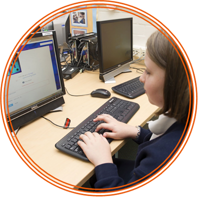
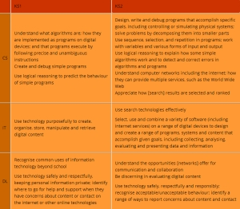
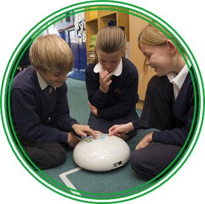

Getting Started
As with other subjects in the new National Curriculum, the programme of study document for Computing 2 begins with a brief introduction. It presents the subject as one lens through which pupils can understand the world. There is a focus on computational thinking and creativity, as well as opportunities for creative work in programming and digital media.
The introduction also makes clear the three aspects of the Computing curriculum: computer science (CS), information technology (IT) and digital literacy (DL).
The core of Computing is computer science, in which pupils are taught the principles of information and computation, how digital systems work and how to put this knowledge to use through programming. Building on this knowledge and understanding, pupils are equipped to use information technology to create programs, systems and a range of content. Computing also ensures that pupils become digitally literate - able to use, and express themselves and develop their ideas through, information and communication technology - at a level suitable for the future workplace and as active participants in a digital world.

One way of thinking about these aspects is as the foundations, applications and implications of Computing. The aims for the subject as a whole reflect this distinction.
[All pupils] can understand and apply the fundamental principles and concepts of computer science, including abstraction, logic, algorithms and data representation. (CS)
[All pupils] can analyse problems in computational terms, and have repeated practical experience of writing computer programs in order to solve such problems. (CS)
[All pupils] can evaluate and apply information technology, including new or unfamiliar technologies, analytically to solve problems. (IT)
[All pupils] are responsible, competent, confident and creative users of information and communication technology. (DL)
It’s worth noting that computer science aims to cover two distinct, but related, aspects. There’s a focus on computer science itself (the ideas and principles that underpin how digital technology works) but this sits alongside the practical experience of programming, almost certainly the best way for primary pupils to learn about computer science.
Your school has a statutory duty to offer a broad and balanced curriculum that prepares pupils to ‘use computational thinking and creativity to understand and change the world’.3 Therefore, as your school develops its scheme of work for Computing, it would be unwise to ignore any of these aspects, or to give too much emphasis to one to the detriment of the others.
That said, you have the freedom to decide how much time you spend on any aspect of the programme of study, and there’s no implication that the number of bullet points or words should be proportional to the time spent on any aspect, as long as pupils have been taught all the content by the end of the Key Stage.
We will look in more detail at the programme of study, but a quick scan of the subject content shows expectations for the three aspects of Computing at each Key Stage. The content has been adapted below to show how it can be broken down into three sub-sections.

| KS1 | KS2 | |
| CS | Understand what algorithms are; how they are implemented as programs on digital devices; and that programs execute by following precise and unambiguous instructions |
Design, write and debug programs that accomplish specific goals, including controlling or simulating physical systems; solve problems by decomposing them into smaller parts |
| IT | Use technology purposefully to create, organise, store, manipulate and retrieve digital content | Use search technologies effectively Select, use and combine a variety of software (including Internet services) on a range of digital devices to design and create a range of programs, systems and content that accomplish given goals, including collecting, analysing, evaluating and presenting data and information |
| DL | Recognise common uses of information technology beyond school Use technology safely and respectfully, keeping personal information private; identify where to go for help and support when they have concerns about content or contact on the Internet or other online technologies |
Understand the opportunities [networks] offer for communication and collaboration |
It should be noted that the statutory requirements are not labelled under these three headings in the programme of study, and the distinction between information technology and digital literacy is open to some interpretation. The important thing is to cover the content in a balanced, stimulating and creative way rather than being overly concerned about the specifics of terminology.
There are big changes in assessment, too, as with other subjects of the National Curriculum. The old system of levels will be abolished and is not being replaced. How your school chooses to assess, record and report pupils' mastery of the curriculum content is your decision, but we explore some possible approaches in the Assessment section.
